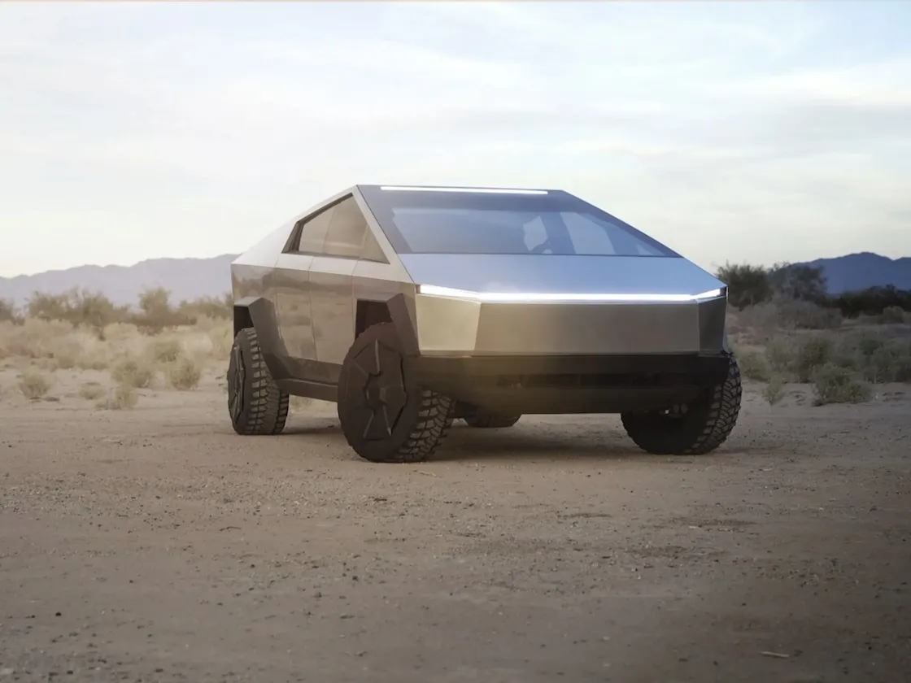

-
Lo nuevo de Netflix
Nexflix ha anunciando sus estrenos para este cierre de año 2023, nos lanzamos a su evento en el World Trade Center, donde presentaron las nuevas temporadas de algunas series, asi como peliculas proximas a estrenarse en su plataforma.
-
Llegan los video juegos a Netflix
Esta semana Netflix anuncio que estara incluyendo nuevos juegos en su plataforma de juegos, entre ellos llegan GTA 3, además presentaron algunos otros titulos independientes que llegaran este cierre de año checa la lista completa.
-
Cybertruck llega a México
Tesla anuncio que proximamente llegara la Cybertruck a México, te contamos mas acerca de las funcionalidades que incluira esta camioneta de lujo, así como los precios de venta caber recordar que si quieres obtener uno tienes que darte de alta en su lista de espera.
-
Llegan trupulantes a la Estación Espacial
Este fin de semana arribaron a la Estación Espacial nuevos tripulante, esto después de que SpaceX probara sus nuevo cohetes, esto es un hito muy importante ya que no se habían realizado salidas del planeta en mas de 10 años.
-
¿Buscando donde invertir?
Recientemente el banco de México esta incursionando en el tema de las criptomonedas, acá te platicamos como esta la movida, y como tus puedes comenzar a comprar tus primeros bitcoins.